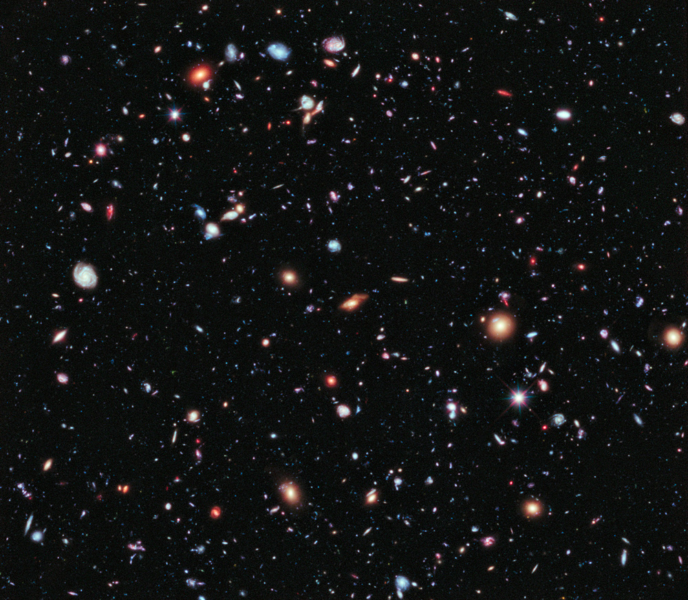

UC San Diego Data Science
Ethan Cai.
Making sense of language,
signals, and uncertainty.
I'm a data science student with a mathematics minor. I work on natural language processing and time-series prediction, with a focus on how we evaluate what a model learns.
01 Research & projects
Selected work
02 A little context
Questions first.
Then models.
My projects span language, financial time series, and predictive modeling. I'm interested in the decisions around the model, too: how labels are defined, how data is split, and what a reported result actually tells us.
Education & experience
03 Code & collaboration
On GitHub
Have an interesting question?
Let's talk